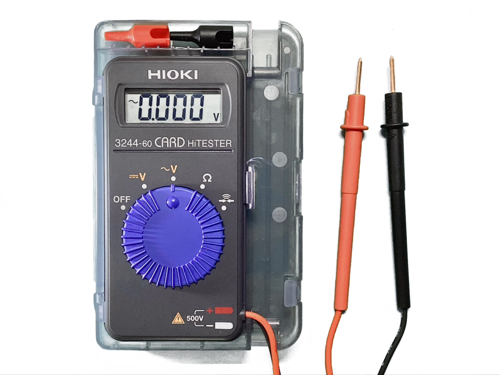

皆さん、電気関係で何かしら弄ったりしたことある方ならかなりの確率でテスターをお持ちではないでしょうか。
今回は電工の現場でもよく使われる(らしい)テスターを紹介します。
今回、紹介するのはHIOKI 3244-60 CARD HiTESTERです。
最も一般的なテスターの1つで、国内製造という魅力があります。

本機種、どこかで見かけたことがある人は多いと思います。
電工の方々でも、測定カテゴリについて知らない方も多いので一応説明しておきます。
IEC 61010などで制定されているもので、是非知っておくべきことです。
| 測定カテゴリ | カテゴリ概要 | 使用シーン |
|---|---|---|
| CAT IV | 建造物への引き込み電路、引込口から電力量メータおよび分電盤までの電路 | キュービクル |
| CAT III | 分電盤から電力を直接取り込む機器(固定設備など)の電源配線と電源回路および分電盤からコンセントの裏側の配線端子までの配電路 | 屋内電気工事 |
| CAT II | コンセントに直接接続する機器の電源プラグから機器の電源回路まで | 通電中の家電・ガジェット |
| ◯CAT I(分類なし) | 上記の全てのカテゴリに適合しないもの厳密な定義は不明 | コンセントによる通電をしていない機器 |
※横スクロールできます。
HIOKI Gennect公式より引用(一部編集)
このテスターは、CAT III 300V / CAT II 600Vに対応していますから、屋内電気工事に適しています。
しかも、このテスター(厳密に言うとHIOKIの計測機)はレスポンスが最高です。
レンジ変更が速けりゃ、同通ブザーも全てが高速で、電路に触れる時間を減らせます。
安全上、嬉しい点ではないでしょうか。
電子工作には機能が物足りないように感じますが、それでもサブ機として使うほどの実力を持っています。
(私がHIOKIのファンというのもありますが)堂々とおすすめできるテスターの1つです。